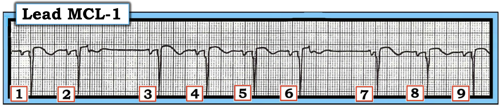
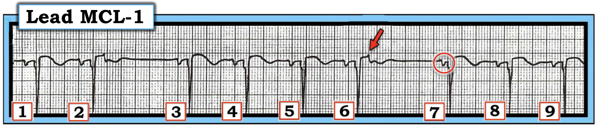
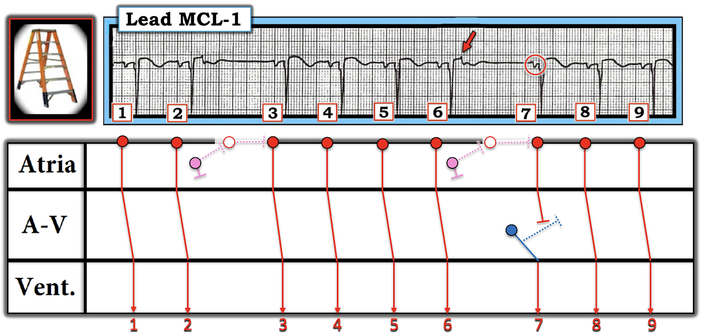
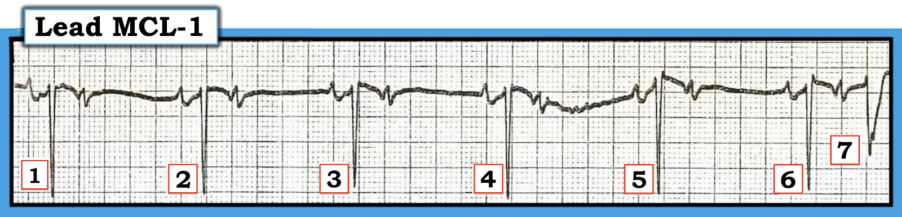
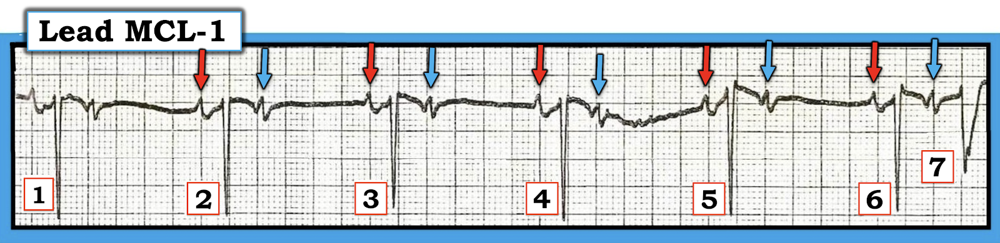

ECG Blog #503 — Nguyên nhân của khoảng ngưng?
=========================
LƯU Ý: Tôi đã quyết định cập nhật và đăng lại một số ca tôi yêu thích từ những năm trước. (Bài hôm nay là phiên bản cải tiến của ECG Blogs #14,57 — đăng lần đầu năm 2011).
=========================
CÂU HỎI: Hãy phân tích nhịp dưới đây ở chuyển đạo bên phải MCL-1.
- Có nhịp theo nhóm (group beating) trong Hình 1. Đây có phải là Wenckebach không?
- Điểm cộng: Vì sao khoảng PR trước nhát #7 lại ngắn hơn khoảng PR trước nhát #6 (và cũng ngắn hơn khoảng PR trước các nhát xoang khác trong bản ghi này?).


SUY NGHĨ CỦA TÔI về nhịp trong Hình 1:
Nhịp trong Hình 1 không đều, nhưng có biểu hiện một kiểu nhịp theo nhóm (với 2 khoảng ngưng ngắn giữa các nhát #2-3 và #6-7).
- Phức bộ QRS của mỗi nhát trong 9 nhát ở bản ghi này đều hẹp (tức là không quá nửa ô lớn về thời gian = không quá 0.10 giây).
- Nhịp nền có vẻ là nhịp xoang, với các sóng P trông giống nhau có khoảng PR cố định đi trước mọi nhát ngoại trừ nhát #7.
- Mặc dù có nhịp theo nhóm — không có bằng chứng nào của Wenckebach hay dạng blốc AV nào khác trên bản ghi này. Thay vào đó, "nguyên nhân" của khoảng ngưng nằm ẩn một phần bên trong sóng T của nhát #2 và 6.
ĐIỂM THEN CHỐT (PEARL) #1: Điều quan trọng cần nhớ là nguyên nhân thường gặp nhất gây khoảng ngưng là PAC bị blốc. Mặc dù phần lớn các nhát sớm trên thất ( = PAC hoặc PJC) được dẫn truyền bình thường xuống thất (tức là với phức bộ QRS hẹp trông giống các nhát dẫn truyền từ xoang khác) — điều này không phải lúc nào cũng đúng. Thay vào đó, PAC (hoặc PJC) đôi khi có thể xảy ra sớm trong chu kỳ đến mức bị "blốc" (không dẫn truyền), vì hệ thống dẫn truyền vẫn còn ở trạng thái trơ tuyệt đối.
- Đây là tình huống của xung sớm A trong Hình 2 — hình này cho thấy xung A xảy ra trong ARP (thời kỳ trơ tuyệt đối — Absolute Refractory Period).
- Vào những lúc khác — các nhát sớm (đến sớm) có thể xảy ra trong RRP (thời kỳ trơ tương đối — Relative Refractory Period) — khi đó sẽ xảy ra dẫn truyền lệch hướng (với QRS rộng và có hình dạng khác). Đây là tình huống của xung sớm B trong Hình 2.
- Vì xung B xảy ra trong RRP — một phần (nhưng không phải toàn bộ) hệ thống dẫn truyền trong thất đã hồi phục. Thường gặp nhất là các PAC xảy ra tại Điểm B sẽ được dẫn truyền kèm một dạng blốc nhánh và/hoặc blốc phân nhánh nào đó (phản ánh phần hệ thống dẫn truyền chưa hồi phục).
- Xung sớm C trong Hình 2 xảy ra sau khi thời kỳ trơ đã kết thúc. Kết quả là — một PAC xảy ra tại Điểm C sẽ được dẫn truyền bình thường (tức là với QRS hẹp trông giống hệt các nhát xoang khác trên bản ghi).

=========================
Quay lại với các câu hỏi trong ca hôm nay:
Hãy NHÌN lại Hình 1.
- Nhịp theo nhóm trong Hình 1 có phải do Wenckebach không?
- Vì sao khoảng PR trước nhát #7 lại ngắn như vậy?
=========================
TRẢ LỜI:
Không có blốc AV trong Hình 1. Khoảng PR khi đi từ nhát #3 sang các nhát #4,5 và 6 không tăng dần, như lẽ ra phải thấy nếu có Mobitz I (tức blốc AV độ 2 loại Wenckebach).
- Thay vào đó (theo ĐIỂM THEN CHỐT #1) — Nguyên nhân của khoảng ngưng mà ta thấy giữa nhát #6-7 trong Hình 1 là một PAC bị blốc. Chúng tôi minh họa điều này trong Hình 3 — trong đó mũi tên ĐỎ ở sóng T của nhát #6 làm nổi bật "vết khía tố giác" của một PAC bị vùi trong sóng T này.
- Lưu ý rằng một PAC xảy ra rất sớm tương tự (tương ứng với một PAC xảy ra tại điểm A trong Hình 2) có thể được thấy đang làm khía sóng T của nhát #2.
ĐIỂM THEN CHỐT #2: Làm sao ta biết nét lệch nhọn được mũi tên ĐỎ làm nổi bật trong Hình 3 thực sự là một PAC — chứ không phải nhiễu? MẤU CHỐT là không có sóng P xoang dẫn truyền bình thường nào trong bản ghi này biểu hiện bất cứ thứ gì giống một nét lệch "thêm" (tức là sóng T của các nhát #1; 3,4,5; 7,8,9 đều trơn láng — và chỉ có sóng T của nhát #2 và 6 biểu hiện nét lệch nhọn thêm vào này).
- Vì vậy, trước tiên ta cần xác định sóng T bình thường của một nhát dẫn truyền từ xoang trông như thế nào — rồi mới có thể xác định liệu có một PAC nằm ẩn một phần bên trong sóng T của các nhát khác hay không.


ĐIỂM THEN CHỐT #3 — có liên quan đến ĐIỂM THEN CHỐT #1:
- Vì nguyên nhân thường gặp nhất gây khoảng ngưng là PAC bị blốc, nên hóa ra trong thực hành lâm sàng — PAC bị blốc gặp nhiều hơn hẳn bất kỳ dạng blốc AV nào.
- Dù vậy — PAC bị blốc thường kín đáo và khó phát hiện. Vì thế — chúng thường bị bỏ sót. Nhưng — PAC bị blốc sẽ được tìm thấy NẾU ta chủ động tìm (chúng thường ẩn trong và/hoặc làm khía một phần sóng T đi trước — như đã thấy ở trên trong Hình 3).
LƯU Ý: Một PAC xảy ra sẽ khử cực phần còn lại của tâm nhĩ — và do đó thiết lập lại (reset) nút xoang. Kết quả là — một khoảng ngưng ngắn thường theo sau một sóng P đến sớm. Các mối liên hệ này được minh họa dạng sơ đồ trong giản đồ bậc thang (laddergram) ở Hình 4:
- Nhịp trong Hình 4 bắt đầu bằng 2 nhát dẫn truyền từ xoang bình thường (nhát #1 và 2).
- Các vòng tròn HỒNG ở Tầng Nhĩ của giản đồ bậc thang biểu thị 2 PAC không được dẫn truyền xuống thất, vì chúng xảy ra sớm đến mức rơi vào ARP (tương ứng với xung A, như đã trình bày trong Hình 2).
- Lưu ý khoảng ngưng ngắn theo sau mỗi PAC bị blốc này (tức là các khoảng ngưng xảy ra giữa nhát #2-3 và giữa #6-7).
- Không giống Wenckebach AV (trong đó nhịp sóng P nền vẫn đều) — Ta có thể thấy sóng P xoang trước nhát #3 ( = vòng tròn ĐỎ thứ 3 trong Hình 4) bị trễ. Khi sóng P xoang mũi tên ĐỎ thứ 3 này cuối cùng xuất hiện — sóng P này được dẫn truyền xuống thất với khoảng PR bình thường.
- Tiếp theo là 3 sóng P xoang đúng lúc nữa (tạo ra các nhát dẫn truyền từ xoang #4,5,6) — cho đến khi PAC xuất hiện rất sớm tiếp theo xảy ra (mũi tên ĐỎ làm nổi bật PAC bị blốc thứ 2 này, PAC làm khía sóng T của nhát #6).
- Một lần nữa — lại thấy một khoảng ngưng ngắn sau PAC bị blốc thứ 2 này. Nhưng lưu ý rằng khi sóng P xoang tiếp theo cuối cùng xuất hiện — khoảng PR trước nhát #7 ngắn hơn mọi khoảng PR khác trên bản ghi này! (như vòng tròn ĐỎ rỗng cho thấy khoảng PR rất ngắn này trước nhát #7).
ĐIỂM THEN CHỐT #4: Khoảng PR trước nhát #7 quá ngắn để có thể dẫn truyền. Nhưng vì QRS của nhát #7 hẹp và có hình dạng gần như giống hệt mọi nhát dẫn truyền từ xoang khác trên bản ghi này — nhát #7 hẳn phải là một nhát thoát bộ nối! (được biểu diễn dạng sơ đồ bằng vòng tròn XANH DƯƠNG trong Tầng Nút AV).
- Nhịp xoang bình thường sau đó trở lại ở 2 nhát cuối trong Hình 4 ( = nhát #8 và 9).
- Xin nhấn mạnh: Việc xuất hiện nhát thoát bộ nối trong Hình 4 là hoàn toàn thích hợp. Khoảng R-R đi trước nhát #7 dài hơn 6 ô lớn một chút, tương ứng với tần số thoát bộ nối hơi dưới 50/phút — nghĩa là nút AV đang làm đúng việc nó "phải làm" — cụ thể là phát ra một nhát thoát ở tần số thoát bộ nối thích hợp, trong khoảng 40-60/phút, nếu và khi sóng P xoang tiếp theo bị trễ.
- Vượt ra ngoài phần cốt lõi — dành cho một Điểm Rất nâng cao: Điểm cộng cho bạn đọc nào đã dùng compa đo (calipers), và khi đo cẩn thận khoảng R-R của cả hai khoảng ngưng trong Hình 4 — đã phát hiện ra rằng khoảng R-R của khoảng ngưng thứ 1 (giữa nhát #2-3) — thực ra hơi dài hơn khoảng R-R của khoảng ngưng thứ 2. Vì phần lớn thời gian — tần số thoát bộ nối khá đều, tôi đã nghĩ rằng nhát thoát bộ nối trong bản ghi này ( = nhát #7) sẽ có khoảng ngưng đi trước dài hơn khoảng ngưng đi trước nhát #3 (vốn là nhát dẫn truyền từ xoang) — nhưng điều ngược lại đã xảy ra. Tôi cho rằng phát hiện bất ngờ này là do sự dao động nhẹ về tính đều đặn mà đôi khi có thể thấy ở các nhịp thoát.



Phần 2 của ca bệnh hôm nay:
Để nhấn mạnh tầm quan trọng lâm sàng của ca hôm nay — tôi trình bày thêm một nhịp đầy thử thách khác, được thể hiện trong Hình 5.
CÂU HỎI:
Hãy phân tích nhịp dưới đây ở chuyển đạo bên phải MCL-1:
- Đây là dạng blốc AV nào?
- Bệnh nhân có khả năng cần đặt máy tạo nhịp không?


=========================
TRẢ LỜI:
Hy vọng bạn đã không rơi vào bẫy. Không có blốc AV trong Hình 5.
- Như mọi khi — tôi thấy dễ nhất là tiếp cận có hệ thống. Tôi ưa dùng cách tiếp cận Ps,Qs,3Rs (Xem ECG Blog #185).
- Nhịp thất trong Hình 5 khá đều (Regular) với tần số (Rate) ~50/phút ở 6 nhát đầu. Tôi sẽ tạm gác nhát #7 lại.
- QRS của 6 nhát đầu này hẹp trên dải nhịp một chuyển đạo này. Giả sử 11 chuyển đạo còn lại trên bản ghi 12 chuyển đạo xác nhận QRS hẹp — điều này cho ta biết nhịp có nguồn gốc trên thất.
- Sóng P có mặt! (tức là các mũi tên màu trong Hình 6).
- Thông số thứ 5 trong cách tiếp cận Ps,Qs,3R xét xem sóng P có liên quan (Related) với các phức bộ QRS lân cận hay không — và chúng có liên quan ở 6 nhát đầu, vì khoảng PR đi trước nhát #1 đến 6 là hằng định (các sóng P mũi tên ĐỎ trong Hình 6). Như vậy, có dẫn truyền từ xoang!
- Nhưng — cứ cách một sóng P lại có một sóng không được dẫn truyền (Không có QRS nào theo sau các sóng P mũi tên XANH DƯƠNG trong Hình 6).
ĐIỂM THEN CHỐT #5: Nhịp trong Hình 6 không phải là một dạng blốc AV! Có vài lý do giúp ta biết điều này:
- Hình dạng của các sóng P được làm nổi bật bởi mũi tên ĐỎ và XANH DƯƠNG là khác nhau! (sóng P mũi tên ĐỎ có một nét lệch dương nhọn ban đầu, theo sau là một nét lệch âm rộng hơn, tròn — so với — sóng P mũi tên XANH DƯƠNG có hình dạng ba pha âm-dương-âm). Điều này phù hợp với nhịp đôi nhĩ (cứ cách một sóng P lại có một PAC) — vì hình dạng sóng P sẽ khác nhau khi các sóng P phát sinh từ những vị trí khác nhau trong tâm nhĩ.
- Khoảng P-P không đều! Đúng là blốc AV độ 2 và độ 3 thường biểu hiện dao động nhẹ của khoảng P-P — nhưng mức độ dao động khoảng P-P trong kiểu "loạn nhịp xoang theo pha thất (ventriculophasic sinus arrhythmia)" này nhìn chung không rõ rệt bằng mức dao động khoảng P-P thấy trong Hình 6.
- Nhát #7 là một PAC có được dẫn truyền xuống thất, ở đây với phức bộ QRS rộng hơn do dẫn truyền lệch hướng. Hình dạng của sóng P đến sớm cuối cùng này giống hệt hình dạng của từng sóng P mũi tên XANH DƯƠNG đi trước — gợi ý rằng tất cả các sóng P này đều là PAC.
- KẾT LUẬN: Nguyên nhân thường gặp nhất gây khoảng ngưng là PAC bị blốc, chứ không phải một dạng blốc AV nào đó. Không có blốc AV trong Hình 6. Thay vào đó — nhịp là nhịp đôi nhĩ (cứ cách một sóng P lại có một PAC) — với 4 sóng P mũi tên XANH DƯƠNG đầu tiên là các PAC bị blốc — và mũi tên XANH DƯƠNG cuối cùng biểu thị một PAC dẫn truyền lệch hướng (tương tự xung B trong Hình 2).

